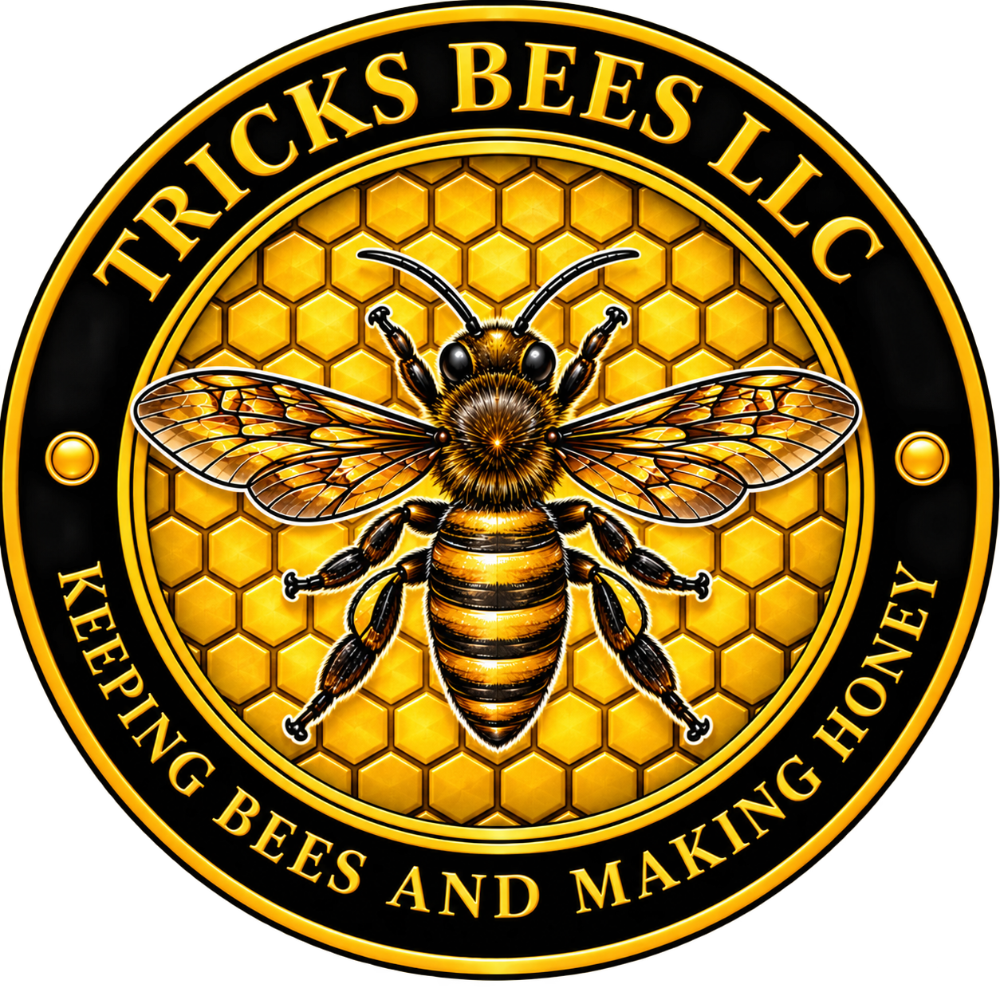
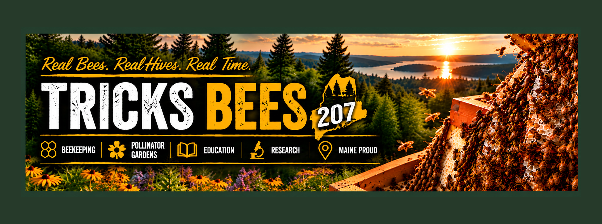

CURRENT CONDITIONS
🌤️--°F
Loading…
Feels like--°F
Humidity--%
Wind-- mph
Precipitation-- in


Watch the bees, follow hive conditions, and learn what is happening in a Maine apiary through the seasons.
Choose a camera to watch live from the apiary. Only the selected camera loads, keeping the page quick and bandwidth-friendly.
This camera slot is ready. Its live feed will appear here when its YouTube broadcast is connected.
Live video is delivered through YouTube. Camera availability may vary during maintenance or connection interruptions.
BroodMinder hive monitoring. Select a hive to open its detailed sensor data and historical graphs.
Temperature, wind and precipitation are being checked.
This is a weather-based guide, not a measurement of actual bee activity.Weather data: U.S. National Weather Service. Location shown publicly as Ellsworth, Maine.
Recent flowering observations reported to iNaturalist within about 25 km of Ellsworth, Maine. These are community observations from the surrounding area, not a claim that each plant is blooming at the Tricks Bees apiary.
Looking for recent plant observations specifically marked with flowers.
Source: iNaturalist community observations. Flowering status uses the iNaturalist Flowers and Fruits annotation set to Flowers. Results depend on what people have recently observed and reported nearby.
Varroa monitoring is one of the most important pieces of colony health management. The chart below is built for ongoing alcohol-wash results from the apiary. As samples are added, it will show how mite pressure changes by hive over time.
A measured sample of adult bees can be washed to estimate the percentage of bees carrying Varroa mites.
A single count is useful, but repeated sampling shows whether mite pressure is rising, falling, or responding to management.
Late-season mite pressure matters because healthy winter bees are central to colony survival through Maine's long winter.
Patrick Hall and Doug Dunlap compared labeled placement between brood frames, horizontal placement on top of brood frames, and untreated controls across 24 colonies at two apiaries.